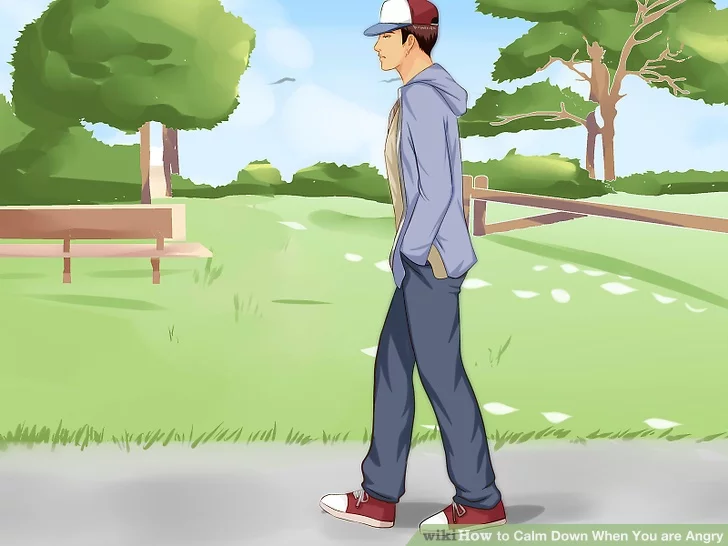
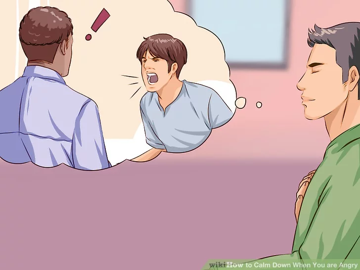
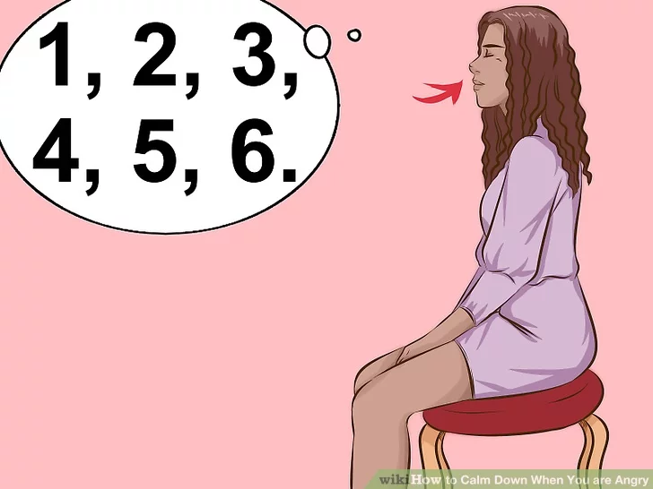
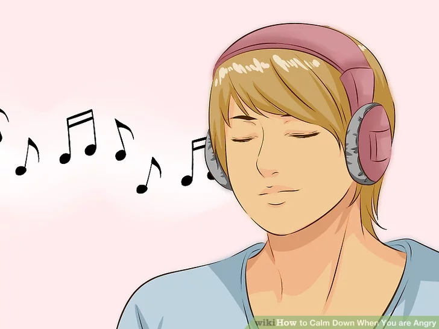

"So, you're feeling angry. Why don't you grab a seat and read about how to chill out:

1. Go for a walk.
Getting away from a situation that is causing you to feel angry can help you calm down and think things through. Getting outdoors and focusing on nature can be even more helpful. [1] Taking a walk will help you burn off some of that negative energy instantly and can help you get away from the problem.

2. Control your first impulse.
If you're prone to fits of anger, then it's likely that your first impulse is not a good one. Maybe you want to kick your car, punch a wall, or scream at someone. Instead of acting on this initial impulse, ask yourself if what you want to do is a really good and productive thing to do. Take a minute to understand how you should really act and to consider what would calm you down the most.

3. Do a deep breathing exercise.
Sit straight upright in a chair. Breathe in deeply through your nose, counting to 6. Then slowly breathe out, counting to 8 or 9. Pause and repeat 10 times.

4. Listen to some relaxing music.
Unwinding to some of your favorite singers might calm you down and get you in the mood. Music is proven to make you feel a certain way when you hear it and bring back memories.